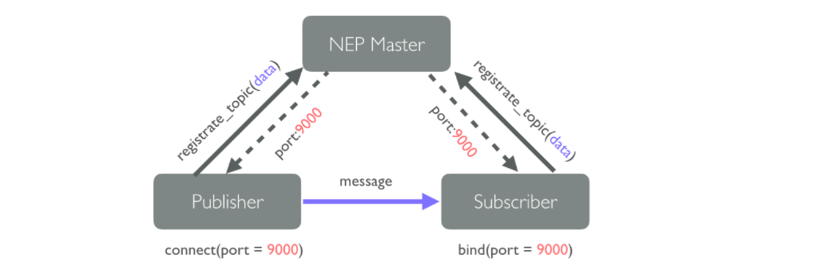

Introduction to Software Architectures for Robotics
Nodes and inter-process communication
In order to reduce the effort required to generate more complex robotic systems, robot applications must be divided into a set of simple and interchangeable processes, also denoted as nodes. The ways in which different nodes communicate between them is denoted as inter-process communication. There exist different inter-process communication options. However, the most extended approach on Robotics is sockets.
The idea of separate a robot application in simple nodes has the main objective to improve the reusability, maintainability and performance of robotic systems. This approach implies to start thinking in a "divide and conquer" way.
Sockets and robot middlewares
Sockets are commonly used when: (i) communication between nodes on the same machine is needed or (ii) communication between nodes on different machines or devices is needed. These nodes can be written on different programming language as long as share the same protocol and serialization approach. A socket is mainly defined by an endpoint which is composed by a protocol, an ip address and a port value. An example of endpoint definition is tcp://127.0.0.1:5000, where tcp indicates the protocol, 127.0.0.1 indicates local ip address and 5000 is the port of the connection.
A typical solution adopted to create distributed robotic systems using sockets is messaging middlewares. NEP uses ZeroMQ, nanomsg, ROS and ROS 2.0 back-end messaging middleware libraries. The approach adopted in NEP is to keep the code independent of the middleware or transport layer in order to enable an ease switch to future technologies.
Comunication patterns
Messaging patterns are generally used to describes the flow of communication between a process in distributed systems. Two widely used messaging patterns in robotics are Request/Process/Reply and Publish/Subscribe.
Request/Process/Reply
In the Request/Process/Reply pattern, also denoted as client/server, a process sends a request for some data and then waits for the response to this request. However, if a response never comes a deadlock can occur (i.e a read operation cannot be performed when a write operation is in progress, and vice versa). This pattern is good for the cases where synchronization between two tasks is needed.
Publish-Subscribe
The publish/subscribe model is another classic pattern where the producers of messages, called publishers, send messages without the knowledge of what or if any receiver, called subscribers. Unlike typical client/server models, the communication in a publish/subscribe model is generally done in an asynchronous way. Most popular publish/subscribe schemes are based on the notion of topics. In this scheme, subscribers can use a set of keywords called topics to filter the information sent by publishers.

Network architectures
Network architectures used to create distributed systems are characterized by a number of trade-offs that involve efficiency, determinism, scalability, security and robustness. NEP supports multiple network architectures which include direct endpoint descriptions, Hybrid Peer to Peer (P2P) master server . A description of each approach is shown bellow.
- In a direct endpoint descriptions architecture the endpoints are manually set by the user. However, this approach must be avoided when many processes need to be connected between them or when it is expected to scale the number of nodes in the future. This is due that the manageability of the system gets worse when the number of nodes increases.
- When using a Hybrid P2P architecture all the nodes in the network are implicitly connected to some node denoted as master name server, which performs the management of endpoints using a set of identifiers called topics. When the master node detects a topic registration request from some node, it assigns to the requested topic an endpoint direction (i.e., an IP address and a port). This endpoint information is saved and sent to the instances which have performed the registration request of the topic (e.g. a publisher or a subscriber). In this approach, communication starts when at least one producer ( e.g. a publisher) and one receiver (e.g. a subscriber) have requested the registration of the same topic. This approach reduces manageability problems but is considered a single point of failure due that if the master name server accidentally crashes or stops, new communication between nodes will be not possible. This approach is used in ROS and by the NEP Discovery Server.
